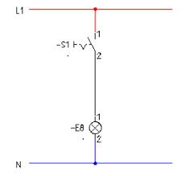
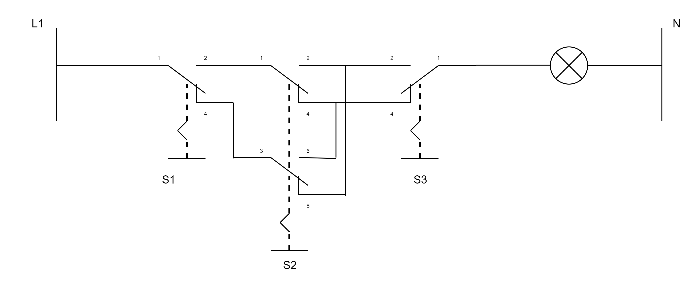
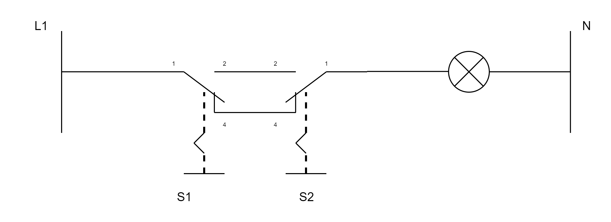
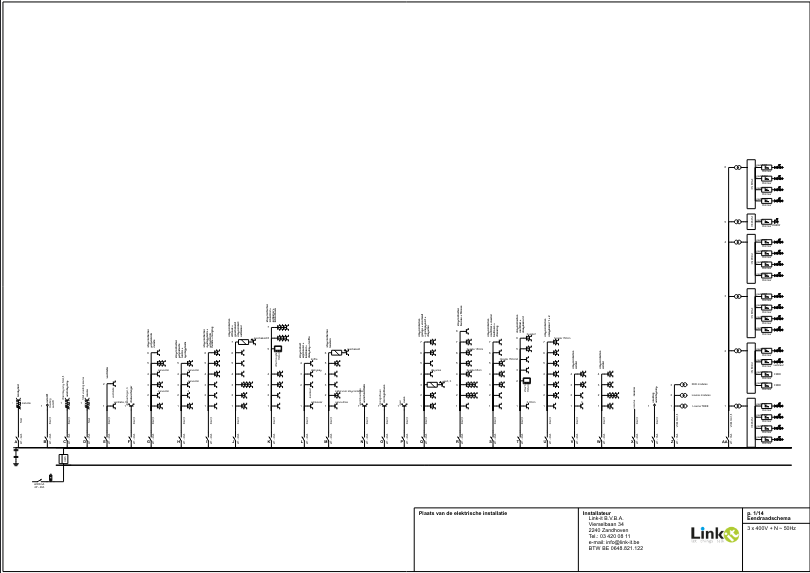
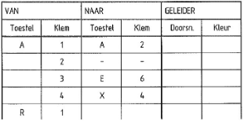
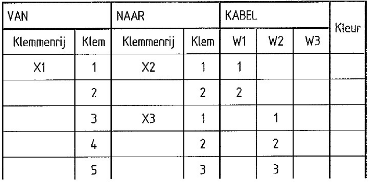
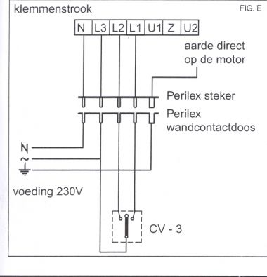
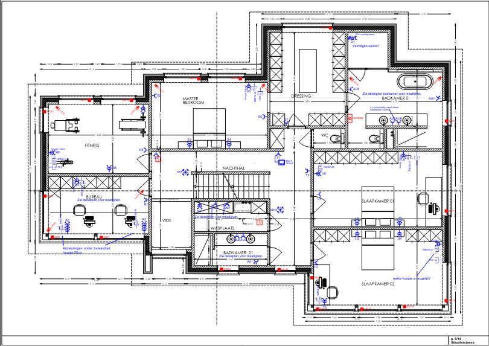

<!doctype html>
<html lang="en">

	<head>
		<meta charset="utf-8">

		<title>Elektronische installatietechnieken - Les 3 Schema's</title>

		<meta name="description" content="Elektronische installatietechnieken - Les 3 Schema's en symbolen">
		<meta name="author" content="Steven Charpentier">

		<meta name="apple-mobile-web-app-capable" content="no">
		<meta name="apple-mobile-web-app-status-bar-style" content="black-translucent">

		<meta name="viewport" content="width=device-width, initial-scale=1.0">

		<link rel="stylesheet" href="dist/reset.css">
		<link rel="stylesheet" href="dist/reveal.css">
		<link rel="stylesheet" href="dist/theme/dracula.css" id="theme">
		<link rel="stylesheet" href="APstyle.css">

		<!-- Theme used for syntax highlighting of code -->
		<link rel="stylesheet" href="plugin/highlight/monokai.css">

		<script src="https://cdn.jsdelivr.net/npm/mermaid@11/dist/mermaid.min.js"></script>
	</head>

	<body>

		<div class="reveal">
            <div class="slides">
    <section data-markdown>
  <script type="text/template">
### Schema's
## Soorten en symbolen

---

## Waarom zoveel soorten schema's?

Wie een installatie wil **begrijpen** heeft iets anders nodig dan wie een installatie wil **uitvoeren**

Daarom bestaan er verschillende schema's, elk met een eigen doel

---

## Schakelaars vs drukknoppen

- **Schakelaar**: blijvende stand (aan/uit), schakelt de lamp rechtstreeks
- **Drukknop**: kort, tijdelijk contact (impuls), veert terug, schakelt zelf niets
- Een drukknop stuurt een **relais** aan, dat de eigenlijke schakeling doet

---

## De klassieke schakelaars

- **Enkelpolig**: 1 lichtpunt vanaf 1 plaats
- **Dubbelpolig**: idem, maar onderbreekt fase én nul
- **Serieschakelaar**: 2 lichtpunten vanaf 1 plaats (3 standen)
- **Wisselschakelaar**: 1 lichtpunt vanaf 2 plaatsen, altijd in paar
- **Kruisschakelaar**: tussen 2 wisselschakelaars, voor 3+ plaatsen

---

## Meer schakelaars

- **Trekschakelaar**: bediend via een koord, typisch in een badkamer (volume 1/2)
- **Dimmer**: lichtsterkte traploos regelen i.p.v. enkel aan/uit

---

## Drukknop-gestuurde systemen

- **Impulsschakelaar / teleruptor / stroomstootschakelaar**: bistabiel relais, wisselt van stand bij elke impuls, onbeperkt aantal drukknoppen mogelijk
- **Minuterie**: zelfde drukknoppen, maar schakelt na een ingestelde tijd automatisch weer uit
- Ideaal voor trapverlichting/gangen met veel bedieningspunten

---

## As 1: eendradig vs meerdradig

- **Eendradig**: elke stroombaan/leiding = **één lijn**, ongeacht het aantal geleiders
- **Meerdradig**: **elke geleider** apart getekend

---

## As 2: controle vs uitvoeringsondersteunend

- **Controleschema's**: begrijpen/verifiëren van de werking, los van de fysieke plaatsing
- **Uitvoeringsondersteunende schema's**: effectief monteren en aansluiten, volgen de werkelijke plaatsing

Beide assen staan los van elkaar

---

## Stroombaanschema

- De officiële AREI-term (Deel 2, Hoofdstuk 2.12)
- **Controleschema**, **meerdradig**
- Getekend tussen L1 en N
- Toont de werking, los van de fysieke plaatsing
- Dit ken je vanbuiten per type schakeling
- Eendradige, verplichte toepassing ervan = het eendraadschema

---

## Stroombaanschema van een kruisschakeling

<div class="mermaid">
graph LR
    L1(("L1")) --> S1["Wisselschakelaar 1"]
    S1 --> K["Kruisschakelaar"]
    K --> S2["Wisselschakelaar 2"]
    S2 --> Lamp["Lamp"]
    Lamp --> N(("N"))
</div>

---

## Voorbeeld: stroombaanschema



---

## Stroombaanschema kruisschakeling
### Echt voorbeeld



---

## Ter vergelijking
### Wisselschakeling en dubbele aansteking

<div style="display:flex;justify-content:center;gap:20px">


</div>

---

## Eendraadschema

- De **eendradige, controlerende** vorm van het stroombaanschema
- **Verplicht** door het AREI voor elke huishoudelijke installatie
- Elke stroombaan: een hoofdletter
- Elk lichtpunt/elke contactdoos: genummerd vanaf de beveiliging

---

## Voorbeeld: eendraadschema



*Reëel voorbeeld van een installateur. Het officiële AREI-voorbeeld staat in Figuur 3.1*

---

## Leidingschema

- **Uitvoeringsondersteunend**, **eendradig**
- Lijnen = buizen, niet geleiders
- Schuine streepjes op een lijn = aantal geleiders in die buis

---

## Leidingschema
### Let op: geen AREI-term

- **Geen** officieel AREI-begrip (in tegenstelling tot stroombaanschema, eendraadschema, uitvoeringsschema, situatieplan)
- Vooral een **didactisch hulpmiddel**: brug tussen buizen en bedrading bij het aanleren van schakelingen
- Een ervaren installateur tekent dit in de praktijk zelden apart uit

---


## Bedradingslijst

Geen schema, wel een **tussenstap**: tabel van elke genummerde draad uit het stroombaanschema

| Draad-nr | Van | Naar |
|---|---|---|
| 1 | L1 | S1:1 |
| 2 | S1:2 | E1:1 |
| 3 | E1:2 | S1:4 |
| 4 | S1:3 | N |
| 5 | PE | E1:PE |

---

## Voorbeeld: bedradingslijst



---

## Bedradingschema

- **Uitvoeringsondersteunend**, **meerdradig**
- Toont exact welke draden door welke buizen lopen
- Getekend op de werkelijke positie t.o.v. de aftakdoos
- **Dit teken je bv. bij een kruisschakeling om alle kabels tussen de dozen te tonen**

---

## Leidingschema vs. bedradingschema
### Het verschil in één zin

- **Leidingschema**: toont enkel **hoeveel** geleiders in een buis lopen (streepjes), niet welke
- **Bedradingschema**: toont **elke geleider apart, met naam**, op zijn werkelijke plaats
- Leidingschema = vereenvoudigd startpunt, bedradingschema = volledig eindresultaat

---


## Uitvoeringsschema
### AREI is hier vaag

- De **volledige** AREI-definitie is één zin: montage en aansluiting weergeven
- Geen eigen onderafdeling met inhoudsvereisten (in tegenstelling tot stroombaanschema/situatieplan)
- Functioneert als **overkoepelende juridische term**

---

## Uitvoeringsschema
### In de praktijk

- **Bedradingschema**: welke draad loopt waar
- **Klemmenschema**: welke draad hoort op welk klemnummer
- Dit zijn de concrete documenten die je onder "uitvoeringsschema" tekent

---

## Voorbeeld: klemmenschema

<div style="display:flex;justify-content:center;gap:20px;align-items:center">


</div>

---

## Situatieplan

- **Uitvoeringsondersteunend**, geen lijnenschema maar een **plattegrond**
- Werkelijke locatie van elk lichtpunt, schakelaar en contactdoos
- Verplicht samen met het eendraadschema
- Nummering sluit aan bij het eendraadschema: letter van de stroombaan + nummer

---

## Voorbeeld: situatieplan



*Reëel voorbeeld. Het officiële AREI-voorbeeld staat in Figuur 3.2*

---

## Grafische symbolen
### AREI Tabel 2.23

- **A. Algemeenheden**: gelijk-/wisselstroom, een-/driefasig
- **B. Elektrische toestellen**: schakelbord, doos, aftakkast
- **C. Leidingen**: leiding, met streepjes voor het aantal geleiders
- **D. Beschermingstoestellen**: smeltveiligheid, automaat, differentieel

---

## Grafische symbolen
### Vervolg

- **E. Schakelaars**: schakelaar, wissel-, kruisschakelaar, dimmer, drukknop
- **F. Contactdozen**: algemeen, meervoudig, waterdicht, met aarding
- **G. Gebruikstoestellen**: lichtpunt, verwarming, wasmachine, motor, kWh-teller

---

## Waar vind je deze symbolen?

- Het exacte symbool: **Tabel 2.23** van het AREI
- Kant-en-klaar in de symbolenbibliotheek van **Trikker** en **diagrams.net**

  </script>
</section>
</div></div>

		<script src="dist/reveal.js"></script>
		<script src="plugin/zoom/zoom.js"></script>
		<script src="plugin/notes/notes.js"></script>
		<script src="plugin/search/search.js"></script>
		<script src="plugin/markdown/markdown.js"></script>
		<script src="plugin/highlight/highlight.js"></script>
		<script>

			// Also available as an ES module, see:
			// https://revealjs.com/initialization/
			Reveal.initialize({
				controls: true,
				progress: true,
				center: true,
				hash: true,

				// Learn about plugins: https://revealjs.com/plugins/
				plugins: [ RevealZoom, RevealNotes, RevealSearch, RevealMarkdown, RevealHighlight ]
			}).then(() => {
				mermaid.initialize({ startOnLoad: false, theme: 'base', themeVariables: {
					primaryColor: '#F7F2F2',
					primaryBorderColor: '#97000C',
					primaryTextColor: '#231F20',
					lineColor: '#68676C',
					background: '#FFFFFF'
				} });
				mermaid.run({ querySelector: '.mermaid' });
				Reveal.addEventListener('slidechanged', () => {
					mermaid.run({ querySelector: '.mermaid' });
				});

				// Afbeeldingen laden asynchroon in. Reveal berekent de verticale
				// centrering ("center: true") op het moment van wisselen, dus vóór
				// een afbeelding klaar is met laden. Zonder herberekening blijft de
				// slide dan gecentreerd staan op de (kleinere) hoogte zonder afbeelding,
				// waardoor de afbeelding te laag lijkt te staan. Na elke load: opnieuw layouten.
				document.querySelectorAll('.reveal img').forEach((img) => {
					if (img.complete) return;
					img.addEventListener('load', () => Reveal.layout());
				});
			});

		</script>
</body>

</Html>
